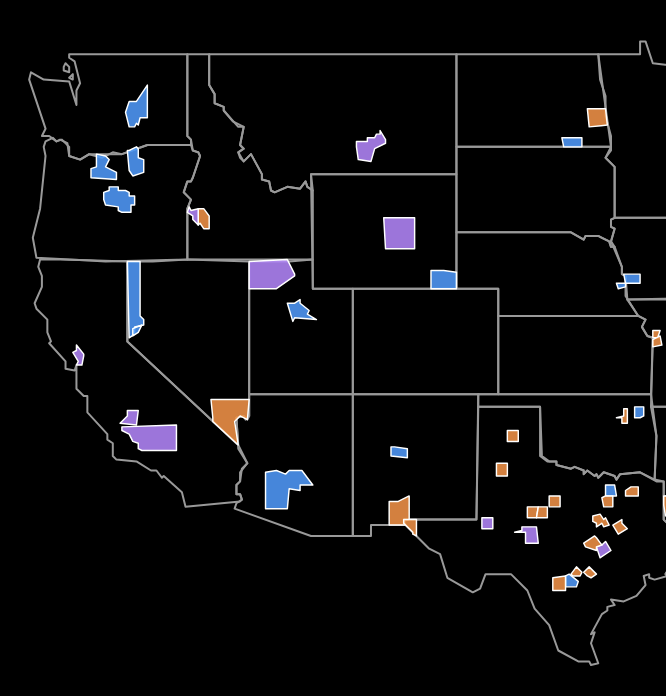
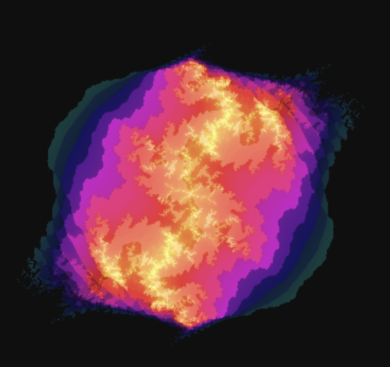
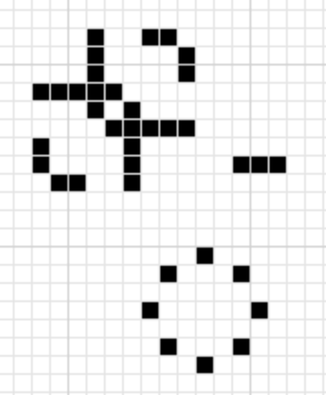

Leo's projects
Note: I was going to include a focusing extension I made that motivated people to stay on task by giving them chapters in a book if they stayed on preset websites instead of trying to block every single website, but I cannot get the file to work again and I don't have any images of it
Datacenter Map
Map of datacenter development across the nation, as well as demographics of the counties they're being built in

Julia Set Simulator
Fun little fractal generator (also has a genetic algorithm for finding cool fractals). Julia sets are an extension of the Mandelbrot set into a range of possible equations. This defines a four-dimensional Julia object which you cannot see for obvious reasons.

A Primer on OCA
Work in progress guide to exploring a type of cellular automata (Short explanation: imagine a grid of lights that are either on or off and a clock. Every time the clock ticks, each light updates its state based on the state of the lights around it. The classical example of this is Conway's Game of Life, where a light turns on if there are three on lights around it and turns off UNLESS there are two or three on lights around it). I've personally explored over 3000 variants and this is a guide to doing the same sort of exploration (and finding the same sort of objects) that I found. (Also, my forum posts)
